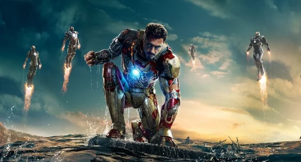
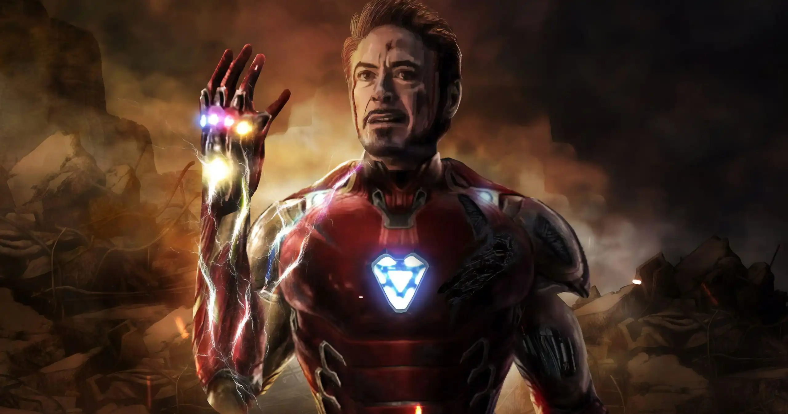
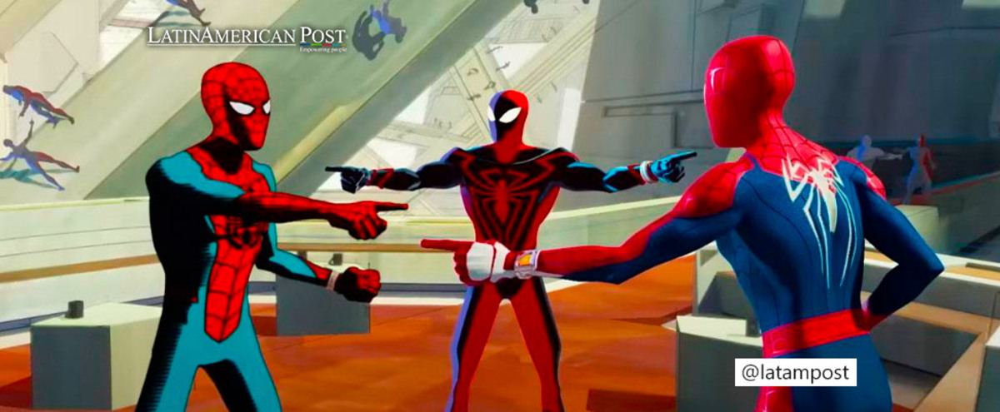
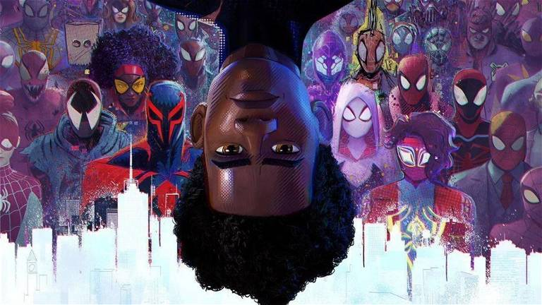
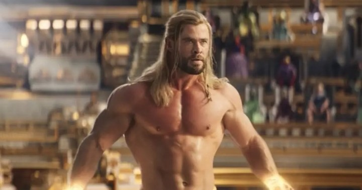
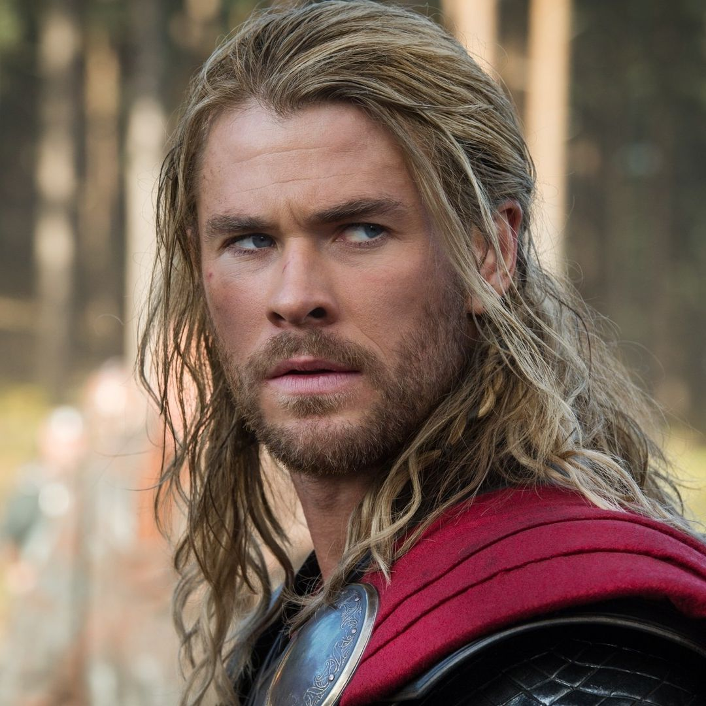

Ironman
Iron Man (Tony Stark): Un genio multimillonario, playboy y filántropo, Tony Stark es el alter ego de Iron Man. Después de sufrir una lesión grave en el pecho durante un secuestro, crea una armadura impulsada por tecnología avanzada que lo convierte en un superhéroe. Es conocido por su ingenio, su sarcasmo y su capacidad para resolver problemas, así como por su carácter carismático y su estilo de vida extravagante.t
Ver más


Spiderman
Spider-Man (Peter Parker): Peter Parker es un estudiante de secundaria que adquiere habilidades sobrehumanas después de ser mordido por una araña radiactiva. Conocido por su agilidad, fuerza mejorada y la capacidad de trepar paredes, se convierte en Spider-Man para luchar contra el crimen en la ciudad de Nueva York. A menudo se enfrenta a desafíos personales mientras equilibra su vida como superhéroe con sus responsabilidades diarias.
Ver más


Thor
Thor es el dios nórdico del trueno y un poderoso guerrero asgardiano. Posee una fuerza sobrehumana, resistencia y habilidades de combate excepcionales. Su arma principal es Mjolnir, un martillo mágico que puede convocar rayos y controlar el clima. A pesar de su arrogancia inicial, Thor aprende humildad y valentía a lo largo de sus aventuras en la Tierra y en otros reinos.
Ver más